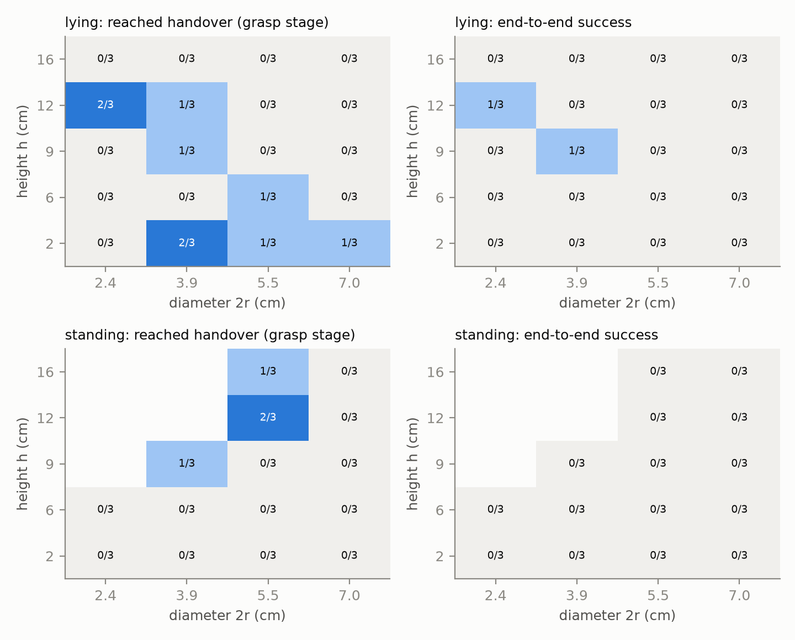
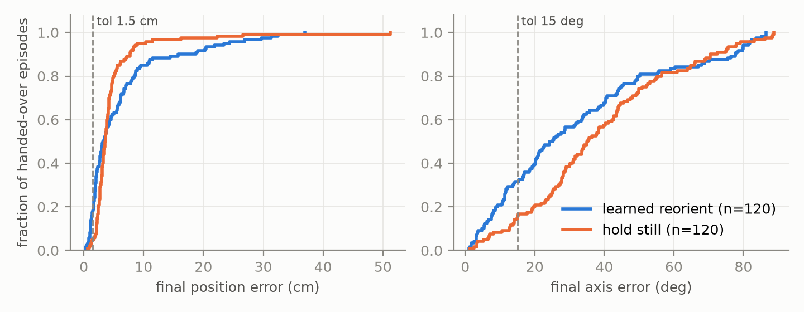
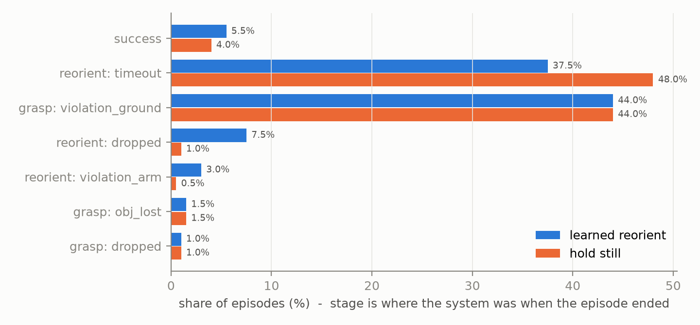

xArm7 + LEAP hand in MuJoCo 3.13. Scripted grasp, learned in-hand reorientation, target revealed at lift.
Result. RESULT_SENTENCE
Scope actually measured. Lying rods, diameter 4.4–5.6 cm, height 8–12 cm (α 1.4–2.7), density 500–900 kg/m³. Targets: axis within 40° of palm y, position in a 3 × 3 × 0.8 cm box on the palm. Outside that we report measured rates, not claims (§6).
| System (same 200 episodes, seed 123) | handover | success | success | handover | median epos | median eang |
|---|---|---|---|---|---|
| Scripted grasp + hold still (baseline) | H_HO | H_S | H_SG | H_EP | H_EA |
| Scripted grasp + learned reorient | P_HO | P_S | P_SG | P_EP | P_EA |
Errors are at episode end over handed-over episodes. Success needs epos ≤ 1.5 cm and eang ≤ 15° held for 2 s with the arm frozen and hand-only contact (thresholds as specified, not loosened).
PlanS) is evaluated.| Item | Choice |
|---|---|
| Robot | UFactory xArm7 + LEAP right hand (MuJoCo Menagerie), hand on a 40 mm bracket past the flange. 23 position actuators with Menagerie gains and ctrl ranges; collisions on; joint limits respected. |
| Palm frame | Origin on the palm face under the finger bases; x toward the fingertips, y across the fingers, z the outward palm normal. |
| Object | Uniform-density cylinder. r 2.2–2.8 cm, h 8–12 cm i.i.d., density 500–900 kg/m³ (mass 60–270 g). Finger span ≈ 9 cm, fingertip reach ≈ 12 cm, so the rod is about half the span wide and about one span long. |
| Start pose | Lying on its side, uniform yaw, x 0.36–0.56 m, y ±0.14 m in front of the robot base. |
| Friction | Object μ 0.7–1.1, ground μ 0.5–0.9, sampled per episode (sliding; MuJoCo default torsional/rolling). |
| Contact model / solver | 2 ms step, implicit-fast, elliptic cones, impratio 10, 2 noslip iterations. Object geom condim 4, solref (10 ms, 1), solimp (0.9, 0.95, 2 mm). The 4 ms default was numerically stable but not accurate (§5). |
| Control | 25 Hz, delta joint-position targets, no latency. Grasp: arm and hand. Reorient: the arm holds the palm-up pose and fingers move at most 0.1 rad per step. |
| Tactile | Five pads (four fingertips, palm), read at 25 Hz: contact flag, summed normal force, force-weighted contact centroid in the pad frame. Noiseless. Counts every contact, since a real pad does not know what it touches. Comparable to a Xela uSkin patch per link. |
| Cameras / vision gate | Two fixed cameras at (1.1, ±0.7, 0.9) m and one wrist camera on a bracket behind the palm. The stand-in exposes ground-truth object pose + (r, h) at 5 Hz only when ≥ 30 % of 32 area-weighted surface samples are unoccluded from at least one camera (ray-cast). Otherwise the last estimate is held with the flag at 0. 30 % is about the silhouette a pose estimator needs for a textureless cylinder of known class. |
| Deployment observation | Arm/hand q and dq, previous action, current targets, tactile, palm pose from kinematics, gated vision, target block (zeros and flag 0 until lift), time. No object pose while occluded, no mass/friction, no object–ground forces. |
| Lift detector | At each control step (25 Hz), contacts are classified from MuJoCo contact geoms: lift is the first step where the object touches ≥ 1 hand geom and no floor, arm-link or other geom. The world then writes T* into the observation. |
| T* sampling and feasibility | Drawn once per episode, fixed in the palm frame, independent of the grasp. Axis: palm y rotated by an angle uniform in [0°, 40°] about a random perpendicular. Position: x ∈ [−4.5, −1.5] cm, y ∈ [−1.5, 1.5] cm, z = palm-contact height for that axis + [0.2, 1.0] cm. Feasible = within 8 cm of the palm origin and no penetration with the palm/wrist at open fingers (resampled otherwise). The box was centred once on the median handover pose over 200 grasps; the hold-still baseline measures how much of it is free. |
| Termination | Success; object contact with anything but the hand after lift (violation); 5 steps without hand contact after lift (drop); object > 0.5 m from the workspace centre; 20 s horizon. |
| Stage transition | Grasp → reorient when the lift flag is set and the arm has reached the palm-up hold configuration (joint error < 0.03 rad), or 200 steps after lift. |
Stage 1: scripted grasp (inhand/planc/scripted_grasp.py). It reads only the deploy observation. The object pose comes from the gated vision stand-in, which sees the rod on the floor.
It never reads T*. It uses the lift flag only as an event.
Stage 2: learned reorient (PlanS in inhand/systems.py). A recurrent PPO actor on the deploy observation, running from handover to the end of the episode. The interface between the stages is the simulator state itself: the policy is trained from a bank of 266 states saved at real handovers (scripts/collect_handovers.py), mixed 70/30 with synthetic in-hand drops for coverage.
| Observation | Actor: the 161-d deploy vector above, with time measured from handover. Critic: deploy vector + object pose/velocity in the palm frame, r, h, mass, frictions, contact flags, true target (asymmetric actor-critic, train only). |
|---|---|
| Action | 16 finger delta-targets in [−1, 1] × 0.1 rad. Arm actions are zeroed: the target is palm-frame, and moving the arm only adds ways to touch the object with an arm link. |
| Reward | exp(−epos/3 cm) + exp(−eang/0.4 rad) + 2·[in tolerance] + 50·[success] − 10·[drop or violation] − 0.002‖a‖². All shaping is positive and bounded. With negative per-step error the first policies learned that ending the episode early (throwing the rod into the arm) was optimal. |
| Termination | As §2, 10 s horizon (the grasp uses about 9 s of the 20 s episode). |
| Algorithm | PPO, GRU(256) over MLP(512, 256, 128). γ 0.99, λ 0.95, clip 0.2, 4 epochs × 4 minibatches, KL-adaptive LR (target 0.02), 56 envs × 64 steps per iteration. |
| Why | The fingers occlude the rod, so pose must be carried through time from tactile and proprioception: hence a recurrent actor. Privileged state makes the value function learnable in minutes rather than hours. Training directly on deploy observations removes the teacher–student distillation step, which the time budget could not afford. |
The grasp decides both whether the episode gets to reorientation and where the object starts in the hand. Rates below are handovers (object hand-only after the palm-up roll) on lying rods of the trained band.
| Change | handover | Evidence |
|---|---|---|
| Original script, 4 ms step, impratio 100, stiff object contact | 1/12 | Every failure: a finger touches the rod, the rod leaves at 0.5–0.8 m/s in one control step, which counts as lift, then lands (violation). |
| Sweeps of offset, clearance, close order, compliant close (stall limit) | 0–25 % | No setting fixed the flick; stall-limited fingers never wrapped. |
| Same script at 1 ms step | 8/16 | So the flick was largely a time-step artefact. |
| 2 ms, solref 10 ms, solimp width 2 mm, impratio 10 | 8/16 | Same as 1 ms at half the cost; adopted. |
| + palm pressed 2 cm into the rod, fingers close over 12 steps | 34–53 % | Remaining failure: the close still pops the rod on some seeds. |
| + catch on lift flag | 53–66 % | 32 episodes each on two seeds. |
| Final script, 480 episodes | 55 % | 266 handovers saved as the reorient reset bank. |
Trade-off. A scripted grasp took about 40 minutes to reach 55 % and needs no training, but it caps end-to-end success at 55 %. It also hands over a spread of in-hand poses (axis 2°–59° from palm y, 10th–90th percentile) that the reorient policy must absorb. A learned, value-aware grasp could both lift more reliably and pick grasps that are easy to reorient from. That is the single change with the largest expected gain.
ENVELOPE_TEXT



TAXONOMY_TEXT
COMPUTE_TEXT
MuJoCo 3.13 and MuJoCo Menagerie (xArm7, LEAP hand); PyTorch; custom PPO following rl_games' KL-adaptive schedule. Pinto et al., Asymmetric Actor Critic (2017); Chen et al., Visual Dexterity (2023); Handa et al., DeXtreme (2023); Andrychowicz et al., HER (2017); Ross et al., DAgger (2011). LLM assistance (Claude) for code and debugging.